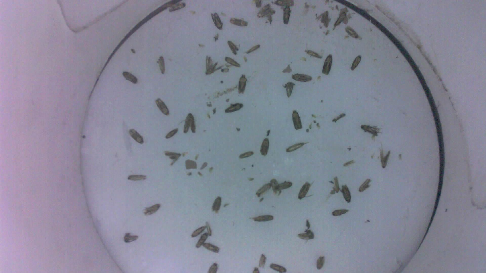
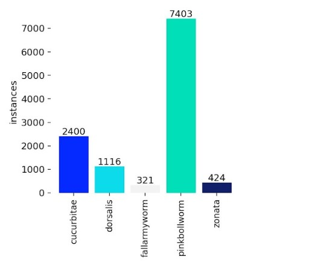
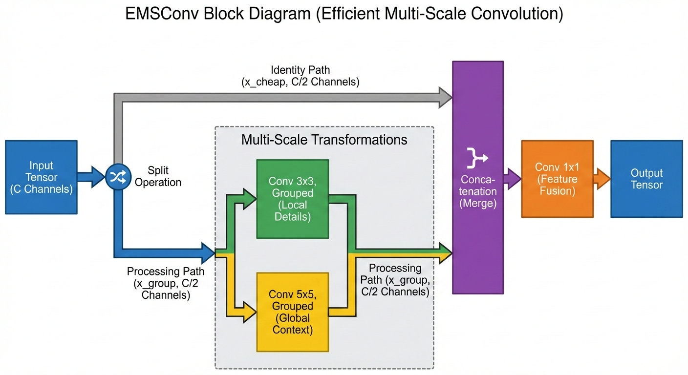
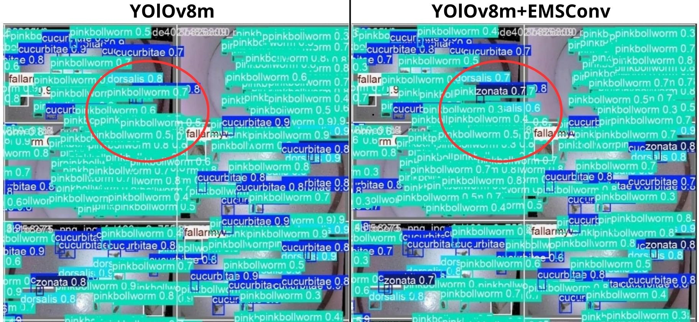

1. Latar Belakang & Masalah
Divisi R&D PT MSMB mengembangkan Trap Monitoring IoT, namun terkendala hardware masih prototipe → data real belum tersedia.:
- Urgensi: Pengembangan AI tidak bisa menunggu hardware selesai → perlu data proxy.
- Heavy Occlusion: Hama menumpuk, menyebabkan under-segmentation.

Fig 1. Kondisi oklusi berat (tumpukan hama).
2. Tujuan Penelitian
- Mengembangkan & Mengintegrasikan YOLOv8m+EMSConv akurat saat oklusi.
- Menemukan dan mengurasi dataset yang representatif untuk kondisi lapangan.
- Menyediakan modul termodifikasi siap pakai untuk tim RnD MSMB.
3. Dataset & Karakteristik
| Sumber | Funnel Trap V1 (Roboflow) |
|---|---|
| Total | 658 Citra (70:20:10 Split) |
5 Kelas Target:
cucurbitae, dorsalis, frugiperda, gossypiella, zonata.

4. Implementasi Modular
Modifikasi dilakukan menggunakan teknik Runtime Injection agar library inti Ultralytics tetap bersih (reproducible):
-
1. architectural_components.py
Berisi implementasi class PyTorch untuk layer EMSConv (Split-Transform-Merge) dan blok C2f_EMSCP. -
2. system_integrator.py
Script otomatis (monkey-patching) untuk mendaftarkan modul baru ke dalam registry YOLO saat runtime. -
3. custom.yaml
Konfigurasi topologi jaringan yang memanggil modul kustom pada bagian Head.
5. Konfigurasi Pelatihan
| Hardware | GPU Tesla T4 (Colab) |
| Epochs | 150 (Patience: 30) |
| Auto-orient | Applied (via Roboflow) |
| Augmentasi | Mosaic, Flip, HSV |
6. Inovasi: EMSConv (Proposed Method)
Modifikasi Head YOLOv8m: Blok C2f diganti menjadi C2f_EMSCP untuk memperluas Receptive Field.

Fig 2. Arsitektur YOLOv8m + EMSConv Head.
Mekanisme EMSConv:
- Split: Membagi kanal input (identitas & konvolusi) untuk efisiensi.
- Transform: Kernel 3x3 (Lokal) & 5x5 (Global) paralel.
- Tujuan: Meningkatkan receptive field tanpa menambah beban komputasi besar..
7. Hasil Kuantitatif
| Metrik | YOLOv8m | +EMSConv | Delta |
|---|---|---|---|
| mAP@50 | 97.2% | 98.3% | +1.1% |
| mAP@50-95 | 71.7% | 72.6% | +0.9% |
| Precision | 95.5% | 97% | +1.5% |
| Recall | 96% | 97.2% | +1.2% |
| Parameters | 25.8 M | 23.9 M | -1.9 M | Waktu Training | 0.875 jam | 0.855 jam | Sedikit Cepat |
YOLOv8m + EMSConv terbukti meningkatkan akurasi (+1.1% mAP). Model lebih ringan & sedikit lebih cepat.
8. Analisis Visual

YOLOv8m
Under-segmentation
Under-segmentation
YOLOv8m+EMSConv
Separasi Jelas
Separasi Jelas
Fig 3. Model kustom mampu mendeteksi lebih banyak individu hama.
9. Kesimpulan
Integrasi EMSConv berhasil mengatasi masalah occlusion pada Trap Monitoring dengan peningkatan mAP signifikan tanpa menambah beban komputasi. Solusi ini siap diimplementasikan untuk mendukung pertanian presisi.